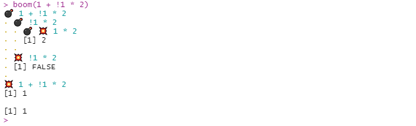
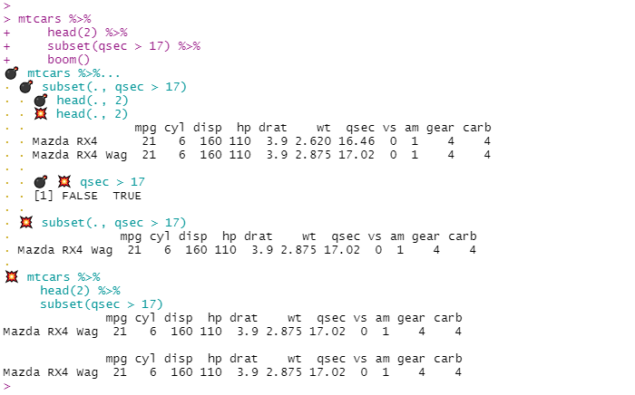

The {boomer} package provides debugging tools that let you inspect the intermediate results of a call. The output looks as if we explode a call into its parts hence the name.
-
boom()prints the intermediate results of a call or a code chunk. -
rig()creates a copy of a function which will display the intermediate results of all the calls of it body. -
rig_in_namespace()rigs a namespaced function in place, so its always verbose even when called by other existing functions. It is especially handy for package development.
boom()


You can use boom() with {magrittr} pipes, just pipe to boom() at the end of a pipe chain.

If a call fails, {boomer} will print intermediate outputs up to the occurrence of the error, it can help with debugging:

boom() features optional arguments :
clock: set toTRUEto see how long each step (in isolation!) took to run.print: set to a function such asstrto change what is printed (see?boomto see how to print differently depending on class). Useful alternatives would bedplyr::glimpseofinvisible(to print nothing).
One use case is when the output is too long.

boom() also works works on loops and multi-line expression.

rig()
rig() a function in order to boom() its body, its arguments are printed by default when they’re evaluated.
hello <- function(x) { if(!is.character(x) | length(x) != 1) { stop("`x` should be a string") } paste0("Hello ", x, "!") } rig(hello)("world")

rig_in_namespace()
rig_in_namespace() was designed to assist package development. Functions are rigged in place and we can explode the calls of the bodies of several functions at a time.
For instance you might have these functions in a package :
cylinder_vol <- function(r, h) { h * disk_area(r) } disk_area <- function(r) { pi * r^2 }
cylinder_vol depends on disk_area, call devtools::load_all() then rig_in_namespace() on both and enjoy the detailed output:
devtools::load_all() rig_in_namespace(cylinder_vol, disk_area) cylinder_vol(3,10)
 ## Addin
## Addin
To avoid typing boom() all the time you can use the provided addin named “Explode a call with boom()”: just attribute a key combination to it (I use ctrl+shift+alt+B on windows), select the call you’d like to explode and fire away!
Options
Several options are proposed to weak he printed output of {boomer}’s functions and addin, see ?boomer to learn about them.
In particular on some operating systems {boomer}’s functions’ output might not always look good in markdown report or reprexes. It’s due to how he system handles UTF-8 characters. In this case one can use options(boomer.safe_print = TRUE) for a more satisfactory input.
Notes
{boomer} prints the output of intermediate steps as they are executed, and thus doesn’t say anything about what isn’t executed, it is in contrast with functions like lobstr::ast() which return the parse tree.
Thanks to @data_question for suggesting the name {boomer} on twitter.